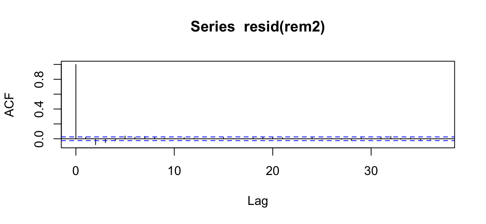
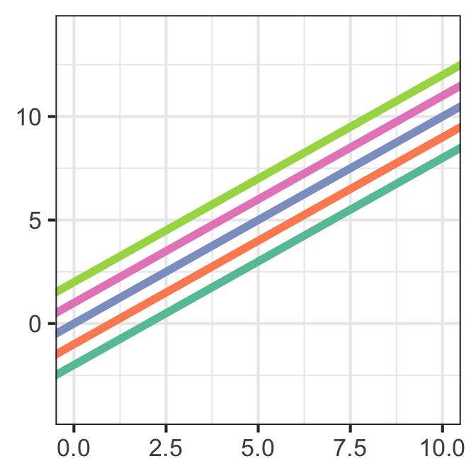

34 Hierarchical Models (part 1)
34.1 Section Learning Outcomes
There are some datasets that have a hierarchical structure to them, with data collected a several levels - for example, imagine a math tutoring program that tracks student progress over time in several different schools in each of several school districts. The levels are student, school, and district and there may be multiple datapoints - and relevant predictors - at each level.
Looking at it from a really different angle, there are sometimes predictor variables that we really anticipate to impact response, but we’d hate to have to specify their values in order to make model predictions…in the example above, think of Student ID and school, for example.
Here’s another way of thinking about it: sometimes, you have a categorical variable for which you’ve got plenty of observations of all the possible values of interest. For example, you want to understand whether people prefer to drink “coffee” or “tea” or “neither” – and have plenty of observations of people who prefer each. That’s a standard “fixed effect” predictor (what we’ve just been calling a “predictor” in our models so far). But other times, you have a categorical variable with a large to infinite range of possible values, and you’ve got observations of just a few: for instance, maybe the variable is City in a global dataset, or maybe it’s person_ID in a health claims data on thousands of Americans. In cases like these, you have data on only a small subset (or at least not all) of the possible “groups” of interest, and using such a variable as a standard “fixed effect” predictor in a regression model feels a bit off…because you don’t care to specify a single particular city or person to make predictions, but also because what about all the other cities and people you don’t have data on?
And one more way of thinking about it (last one, I promise) – what if your data are collected at different levels of some kind of hierarchy? Going back to the school example, you might have students within a class (and know their age and demographic information), plus know which school their class is part of (and how big it is, what its geographic locations is, etc.), plus you know the school district the school belongs to (and whether it’s urban or rural, etc.) These are levels in a hierarchy of data. All the students in a district have the same district characteristics, but also their own individual-level characteristics like their age, too. The class of models we’re about to see can also help to organize and keep track of all these multiple levels.
Whichever way we think about it…
Hierarchical models, aka random effects models, aka multilevel models, aka mixed effects models…to the rescue! (Note, aka stands for “also known as” - these models have many names but all refer to basically the same strategy.)
By the end of the module you will:
- Explain why random effects are useful. What structural features of data do they account for, and what shortcomings of regression models they typically help correct?
- Make informed, sensible decisions about whether a given candidate variable makes more sense as a fixed effect (“normal” predictor) or a random effect
- Explain what a model with random slopes is, and why we use them sparingly if at all
- Plan, fit and assess models with random effects in R
34.2 Text Reference
Recommended reading for the materials covered in this tutorial can be found in:
- Beyond Multiple Linear Regression Chapters 8-11
- Course Notes Chapters 14-15
- Regression Modeling Strategies Chapter 7
- Ecological Models & Data in R Chapter 10
It’s suggested that you consider consulting these chapters after doing this tutorial, with particular focus on any topics you found most challenging.
34.3 Random Effects
- What if residuals are not independent?
- In other words: we have “dependent data”…
- A solution (with many names): hierarchical models, multi-level models, random effects models, or mixed effects models.
34.4 Dataset
This week’s dataset is about beaked whales, and how they might react to sounds made by naval vessels using mid-frequency sonar at sea (it’s used to hunt submarines, and is used in many training exercises and probably on real naval operations as well).
The Whales
Here’s a tiny bit (1 minute!) about this type of whale:
The Issue
Why would we expect that these animals might respond adversely to sonar sounds? Well…there have been some unusual mass stranding events. What? Well…
So what about sonar? The video below gives a bit of background, but also note that it’s produced by an environmental non-profit with a very specific point of view (they think the sonar is very harmful and have made this video to try to convince you of that). But, it also does give a quick bit of background. Just know that others (world navies, for one, and probably also most scientists) would present things a bit differently.
And, back to our data
The data we’ll examine this time are from a paper by Erin Falcone and others published in 2017 (http://rsos.royalsocietypublishing.org/content/royopensci/4/8/170629.full.pdf).
Satellite tags were used to record dive data and movements of 16 Cuvier’s beaked whales for up to 88 days each. The whales were incidentally exposed to different types of naval sonar exercises during the study period.
None of them were stranded, thankfully. But still they may have responded by changing their behavior, and examining how could help us understand how the sonar might affect them short- and long-terms, and maybe how similar reactions might in some cases lead to those strandings. So…
How did characteristics of the whales’ dives change during sonar exposure? We will look specifically at shallow dive duration as a response variable. We can read in the dataset like so:
Some variables in the dataset include:
DurAvg, the duration of each dive in hoursDepthAvg, the maximum dive depth in metersStartTimeof the dive (as a date time)TimeOfDaywhen the dive happened: “Dawn”, “Day”, “Dusk”, or “Night”- Whether
SonarAandSonarB(two different types of naval mid-frequency sonar) were present SonarAMinKm.fillandSonarBMinKm.fill, the minimum distance between known sonar sources and the whale (for each sonar type)SonarAPercOL.fillandSonarBPercOL.fill: the percent overlap between the sonar sounds and the whale’s dive (during what proportion of the dive were sonar sounds present?)TagDay, the calendar date of data collectionPeriod, the two-hour period of the theTagDaywhen this dive happenedTagDayPeriodcombination of theTagDayandPeriodvariables to give a unique ID for each 2-hour time block
34.5 Model Plan & Data Exploration
We are especially interested in how dive duration depends on sonar exposure. We also need to control for effects of other variables like depth and time of day.
What do the data look like? Check out a few simple plots in the hints, and feel free to make some more of your own…
34.6 Why not lm()?
Just considering our response variable, DurAvg, which is continuous numeric data, we’d probably try fitting a linear regression model with lm().
(Note: Random effects models can also be used for any GLM, too: count, binary, beta regression, etc. This example just happens to be a linear regression one.)
Following Falcone and colleagues’ modeling plan, we’d fit a model with predictors: DepthAvg, SonarA, SonarB, TimeOfDay, SonarAMinKm.fill, SonarBMinKm.fill, SonarAPercOL.fill and SonarBPercOL.fill.
Give it a try and show the model summary:
base_model <- lm(DurAvg ~ DepthAvg + TimeOfDay + SonarA + SonarB + TimeOfDay +
SonarAMinKm.fill + SonarBMinKm.fill + SonarAPercOL.fill + SonarBPercOL.fill,
data = zc_dives)
summary(base_model)34.7 Model assessment
Which conditions?
Since this is time-series data, where we have many rows of data for each of relatively few individual tagged whales, which assessment condition might we be most worried about not being met? (Select true or false for each statement…)
- We should worry about residual independence, since characteristics of one dive might be like those that are near it in time.
- We should worry about residual normality, since event duration data are often right skewed.
- We should worry about linearity: the effect of time induces non-monotonicity.
For normality: It’s true that the residuals may not be normal, but this isn’t really the standard thing we worry about with dependent data that require a random effects model…it’s more a separate problem specific to data where the response variable is non-negative. We are most concerned about the independence.
The statement about why we should worry about linearity is just pretty much nonsense (no need to understand what it would mean).
Plot to Check
Make the plot you’d need to check the key condition, and see what you think:
We want to check independence so we need a residual ACF plot.
acf(resid(base_model))34.8 Random Effects
For multiple linear regression we would have:
\[ y = \beta_0 + \beta_1x_1 + \beta_2x_2 + ...\beta_n x_n + \epsilon\]
Where \(\epsilon \sim N(0,\sigma)\) are the normally distributed residuals with mean 0.
Now…what will be different for our new model class (the random effect or random intercept model)?
We are saying that the differences between the overall intercept and the group specific intercepts of all the categories defined by the random effect variable follow a normal distribution with mean 0 and some standard deviation that we want to estimate.
34.9 RE candidates?
What kind of variables usually are well modeled as random effects? Well, for one thing, random effect variables must be categorical. Other common characteristics are:
- Variables that measure time
- Variables that measure space or location
- Variables that identify an individual person/place/site/thing for which multiple observations were collected (name, individual ID number)
- Any (categorical) variable that has many or near-infinite possible values, and we only have observations on a subset of those
Consider one or more of the datasets below. In each one, which variable(s) do you think would make good candidates for being modeled as random effects? (Don’t worry about what the response would be, or any details of model planning – this is based solely on the variable type and the context of the situation (as well as you can understand it without more metadata)).
- Thermal preference: https://sldr.netlify.app/data/cold.csv
- NY car crashes https://sldr.netlify.app/data/ny_cars.csv
- Sports votes https://sldr.netlify.app/data/sports-votes-lz27.csv
- PhD innovation https://sldr.netlify.app/data/phd_innovation.csv
- Wood frog abnormality https://sldr.netlify.app/data/FrogAbnormalities.csv
(Read in your chosen dataset and glimpse() it to see what variables are present, then think: which ones are candidates? You probably need to do this in RStudio outside this book, since here you can’t read in datasets from the web – alternatively, you can download a file and view it in spreadsheet software if you prefer.)
34.10 RE Candidates
Here are some suggested answers (not definitive, since borderline cases certainly exist).
- Thermal preference: random effect of
id(Really, no other good possibilities in this dataset. Yes,locationis a location, but it’s either “Indoor” or “Outdoor” and that pretty much covers all the options.) - NY car crashes: random effects of
county,city,year(each of these might work as fixed effects too, depending on goals and context) - Sports votes: random effects of
Area, perhapsState - PhD Innovation: random effects of
year(maybe), and possiblyfield - Wood Frogs: random effects of
FrogIDand maybeYear.
34.11 Model Formula
and the function: glmmTMB().
Many people also use lme4::(g)lmer() to fit these kinds of models, and the syntax for using that function is similar. However, we will stick with glmmTMB() for consistency, and because it can fit models in the negative binomial family, and works well technically.
- We add random effects to the model formula with:
\[ + (1|\text{ variable})\]
34.12 Nested Random Effects
Sometimes you might have multiple random effects in play in a situation. It’s important to distinguish whether these are nested or not (if not, they are “crossed”).
- Nested random effects occur when there’s one random effect grouping variable at a higher level of the hierarchy, and another at a lower level; and every lower-level group belongs to one and only one higher-level group. Example: students (lowest level of hierarchy) nested in classes (middle level) nested in universities (top level). If I am in DATA 545 at Calvin, I am a student only at Calvin and no other universities.
- Crossed random effects are when the members of a single lowest-level grouping might belong to more than one higher-level group. (For example, what if I was actually enrolled in DATA 545 at Calvin and ALSO taking some other course at some other university too? Not nested anymore…)
Here’s a bit more detailed explainer with more examples:
If you do have nested random effects, you add them to your model formula with syntax:
\[\text{response} \sim ... + (1|\text{ variable1 }/ \text{ variable2}) \dots\]
If they were not nested you would just keep them separate, like:
\[\text{response} \sim ... + (1|\text{ variable1 }) + (1| \text{ variable2}) \dots\]
34.13 RE of Individual
When defining random effects earlier, we supposed that each individual tagged whale might have its own characteristic average dive depth that was consistently different from the others. We could account for that with a random effect of TagID. Code it up (remember to use glmmTMB() to fit your model: lm() can’t fit mixed effect models!)
rem1 <- glmmTMB(DurAvg ~ DurAvg ~ DepthAvg + TimeOfDay +
SonarA + SonarB + TimeOfDay +
onarAMinKm.fill + SonarBMinKm.fill +
SonarAPercOL.fill + SonarBPercOL.fill + ...,
data = zc_dives)rem1 <- glmmTMB(DurAvg ~ DepthAvg + TimeOfDay + SonarA + SonarB +
TimeOfDay + SonarAMinKm.fill + SonarBMinKm.fill +
SonarAPercOL.fill + SonarBPercOL.fill + (1 | TagID),
data = zc_dives)34.14 Model Assessment
We need to check the same conditions that we would check for any model of the type we’re fitting.
LMER Conditions
Here, since we’re fitting a linear model (with a random effect), also known as a linear mixed-effect model or LMER or linear mixed model, we’d check
- Linearity of predictor-response relationships (using data scatter plots and residuals vs. fitted plot)
- Independence of residuals (using ACF plot)
- Normality of residuals (using histogram of residuals)
- Error variance constant (using residuals vs fitted plot)
GLMM Conditions
All models with other families and/or link functions are generalized linear mixed-effect models or GLMMs (also but more rarely called GLMER models).
If we had a count, binary, or beta regression model we’d check instead:
- Linearity (on the link scale, using data plots and/or the scaled residual plot)
- Indepdendence of residuals (using the ACF plot)
- Mean-variance relationship (using the scaled residual plot)
Whatever set of conditions we need to check, residual independence is in there, and is the one that we are really hoping our added random effect(s) will help us meet.
Let’s check it! Make an ACF for the rem1 model and compare it with the one for the base_model.
acf(resid(base_model))
acf(resid(rem1))We made progress, but there is still more work to do…
34.15 In or Out
Note that we’ve been comparing models with the random effect variable included as a random effect, and with that variable excluded entirely.
There’s not a lot of sense comparing models that both include the same variable, once as a random effect and once as a fixed effect.
We do not choose whether to make a variable a fixed vs random effect via model selection.
It depends on the context, the question of interest, and the characteristics of the predictor variable(s).
34.16 Next: Nested?
What else can we try? Well, in addition to whales being different from each other, maybe they are also different from themselves.
Huh?
I mean, maybe a whale’s behavior right now is more similar to its behavior 10 minutes ago than it is to behavior hours and hours ago. Whales maybe tend to behave one way for a while, then switch to a new mode.
How can we include this in our model? One way is to use the TagDayPeriod variable, which defines two-hour time blocks. Maybe behavior is pretty consistent within each two-hour time-block, and not so much outside that time window.
(Note: in the Falcone paper, the authors tried several different time-scales (2 hours, 3 hours, 6 hours…) and then used the one that best fit the data - we are skipping that comparison part for simplicity here.)
glimpse(zc_dives)Rows: 6,183
Columns: 14
$ TagID <dbl> 14, 14, 14, 14, 14, 14, 14, 14, 14, 14, 14, 14, 14, …
$ DurAvg <dbl> 0.29300000, 0.32850000, 0.30183333, 0.34633333, 0.33…
$ StartTime <dttm> 2011-01-06 20:45:30, 2011-01-06 22:13:23, 2011-01-0…
$ DepthAvg <dbl> 335.5, 351.5, 287.5, 279.5, 359.5, 311.5, 263.5, 303…
$ TimeOfDay <chr> "Day", "Day", "Day", "Day", "Day", "Dusk", "Dusk", "…
$ SonarA <fct> 0, 0, 0, 0, 0, 0, 0, 0, 0, 0, 0, 0, 0, 0, 0, 0, 0, 0…
$ SonarB <dbl> 0, 0, 0, 0, 0, 0, 0, 0, 0, 0, 0, 0, 0, 0, 0, 0, 0, 0…
$ SonarAMinKm.fill <dbl> 500, 500, 500, 500, 500, 500, 500, 500, 500, 500, 50…
$ SonarBMinKm.fill <dbl> 500, 500, 500, 500, 500, 500, 500, 500, 500, 500, 50…
$ SonarAPercOL.fill <dbl> 0, 0, 0, 0, 0, 0, 0, 0, 0, 0, 0, 0, 0, 0, 0, 0, 0, 0…
$ SonarBPercOL.fill <dbl> 0, 0, 0, 0, 0, 0, 0, 0, 0, 0, 0, 0, 0, 0, 0, 0, 0, 0…
$ TagDay <date> 2011-01-06, 2011-01-06, 2011-01-06, 2011-01-06, 201…
$ Period <chr> "(18,20]", "(20,22]", "(20,22]", "(20,22]", "[0,2]",…
$ TagDayPeriod <chr> "2011-01-06.(18,20]", "2011-01-06.(20,22]", "2011-01…Fit the model! I suggest using a nested random effect here: can you explain why?
rem2 <- glmmTMB(DurAvg ~ DepthAvg + TimeOfDay +
SonarA +
(1|TagID/TagDayPeriod),
data = zc_dives)Better?
How does the ACF look now?
acf(resid(rem2))
It’s much better. Still not perfect, but way better than what we began with (and about as well as we can do with the data available). Since the residual independence condition is met - at least very close to met - we can expect conclusions drawn from the LMER to be much more reliable than if we’d used the original linear model without the random effect.
(We’d need to check the other conditions too, but are skipping it now in the interest of time.)
34.17 Comparison with lm()?
How does this model compare to the original linear regression model?
- Coefficient estimates?
- SEs?
- Additional stuff in the summary output?
Coefficients
There’s no guarantee that the estimates of the \(\beta\)s will be the same for a linear model and a corresponding random effect model. Their standard errors may vary, too, and although it’s not a rule, the SEs may often be biased small in the model without random effects, which means that if you used that no-RE model to draw conclusions, you might wrongly conclude there were real associations between some predictors and the response.
But more broadly: estimates and conclusions may definitely change when you add random effects. The good news: as we already know, if assessment conditions (like residual independence) aren’t met, the conclusions are not valid, but if we can ensure they’re met with the use of random effects, then we should be able to draw valid conclusions.
34.18 Selection
Can we use standard likelihood-based model selection criteria with these models ? Well…yes, and no. They can be fitted two ways, one which does and one which doesn’t allow us to use AIC or BIC for selection as we have been doing previously.
34.19 REML or ML?
There are two different ways to fit these models to data:
- by maximizing the likelihood (ML, as we learned about earlier in the course). Unfortunately, it turns out that in this case, the ML estimates of the variance components (the random effects) is biased, toward underestimating variance, when sample size is small.
- by maximizing the restricted maximum likelihood (REML), which separates the likelhood into two parts (one with the fixed effects and one with the variance components). Maximizing parameters with respect to the second part only yields the REML estimators, which are unbiased and so preferred for smaller sample sizes. BUT there’s a catch…REML values can be used to compare models with different error and random effects structures, but not to determine which predictor variables should remain in a best model.
So, to do the type of model selection and inference we are used to, we want to always be sure to estimate our models via ML (not REML).
Here, we do have a large sample size, so even if we use ML there should not be too much bias.
If we ensure our model is fitted by ML we can also try using AIC or BIC for model selection.
The default for glmmTMB() is to use ML. If you want to be explicit in requiring that (to make it transparent and remind yourself), you can add the input REML = FALSE.
If you ever use OTHER functions to fit random-effect models, know: The default of lmer() and glmer() is to use REML. So if we want to use ML we have to add the input REML = FALSE to our call.
zc_dives_noNA <- zc_dives |>
# think: why do this?
drop_na(DurAvg, DepthAvg, TimeOfDay, SonarA, SonarB, TimeOfDay,
SonarAMinKm.fill, SonarBMinKm.fill, SonarAPercOL.fill, SonarBPercOL.fill)
rem_sonar <- glmmTMB(DurAvg ~ DepthAvg + TimeOfDay + SonarA + SonarB + TimeOfDay +
SonarAMinKm.fill + SonarBMinKm.fill + SonarAPercOL.fill + SonarBPercOL.fill +
(1|TagID / TagDayPeriod),
data = zc_dives_noNA)
rem_no_sonar <- glmmTMB(DurAvg ~ DepthAvg + TimeOfDay + TimeOfDay +
(1|TagID / TagDayPeriod),
data = zc_dives_noNA)
BIC(rem_sonar, rem_no_sonar) df BIC
rem_sonar 14 -14348.92
rem_no_sonar 8 -14321.29Think: does this give us evidence that sonar is associated with whale dive characteristics? How strong?
34.20 Random Slopes?
What we just practiced and called a “random effect” is sometimes also called a “random intercept” model because, although we allowed for an offset between the overall average predicted response value and that of an individual, we did not allow the slope of the relationship with any of the predictor variables to vary randomly with individual. It is possible to do this, although in my experience it often makes interpretation difficult.
Before you do it, think to yourself: do you really think that there is random variation in the relationship of the predictor with the response? One case where random slopes will work well is where there is a strong, clear overall effect and small variations in its magnitude between individuals. Another might be where the relationship with a certain predictor has very strong and very different slopes for different individuals, and you want to account for the added variability this adds to the model. Generally, fitting a random slope model requires a large dataset and interpretation can get VERY complicated; I recommend avoiding it unless you are VERY sure it’s a good idea.
In the glmmTMB() formula, a model with a random slope and intercept in relation to a particular quantitative predictor (PredictorVariable) and random effect or grouping variable (GroupingVariable) is specified with the form:
\[ ... + (PredictorVariable | GroupingVariable)\] or equivalently \[ ... + (1 + PredictorVariable | GroupingVariable)\]
If you want to have a random slope for a certain predictor without the corresponding random intercept (I can’t think of an example where this would be a good idea but you can do it), then use:
\[ ... + (0 + PredictorVariable | GroupingVariable)\]
Still a bit confused about what random slopes are? Well, even if you’re not…Check out this awesome interactive visualization by Michael Freeman!
34.21 Prediction Plots
There is a bit of added consideration involved in making prediction plots for some random effects models.
Unlike GEEs, which provide marginal predictions (predictions of the population average value for any combination of predictor variable values), random effects models provide predictions for an average individual (that is, matching the average of all the random effect groups).
For a linear regression model (or any model with the identity link function, that is, no link function), the predicted values for the population average and average individual are the same.
But with a link function in the mix, it’s different. Consider a (hypothetical) example of a logistic regression vs linear.


In the image above, the linear model case is the first plot, on the top. There, think of the central blue line as the “average RE group” (the prediction you’d get by setting the random effect variance to 0 in making predictions). If you think of each colored line as a different individual. Pick one predictor variable value – say, 5. To get the population average for x = 5, you’d add up the y-values for the light green, pink, blue, orange and green lines and divide by 5…and you would get the y-value along the blue line. Same happens for any other x-value you choose: the “average individual” is the same as the “population average.”
It’s not the same for the logistic regression example on the bottom. There, the “average individual” is the central grey line (and other random effect groups or “individuals” are the other grey lines). But if you follow the process described above to get the “population average” you’ll get, not the middle grey line, but the fat black line.
So, the average predicted response variable value across all possible random effect groups – that is, the marginal or population average – is not the same as the “average individual” or “average RE group” that is easy to compute from the model equation by setting the random effect value to 0.
Parametric bootstrap to the rescue!
How can we get around this problem? We can make predictions from our model for many, many (simulated) individuals to get a ``population” of predictions. Then, we can take a point-wise average over all those individuals (and also use them to find a CI), to get population average predictions and confidence intervals.
We can do this…and we’ll consider it all – prediction, interpretation, and drawing conclusions – in more detail next module!